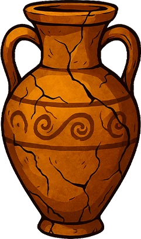
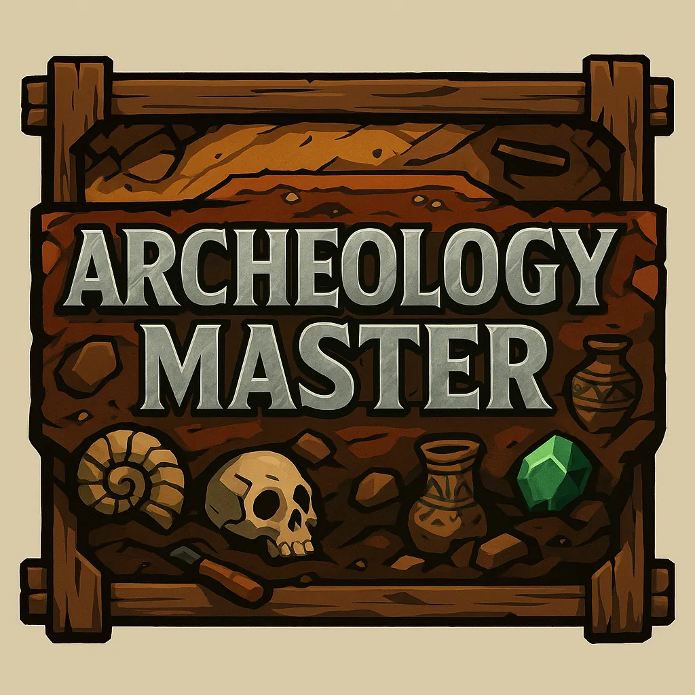
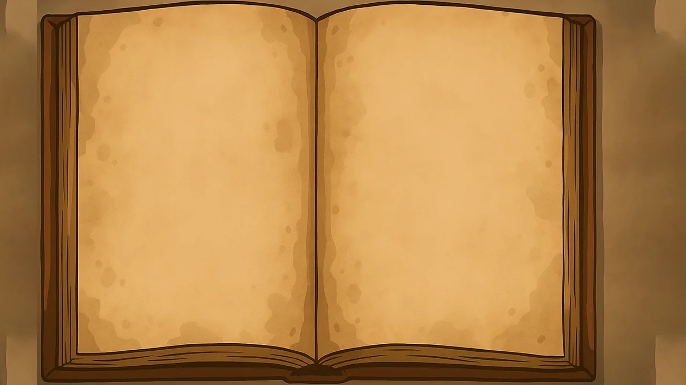
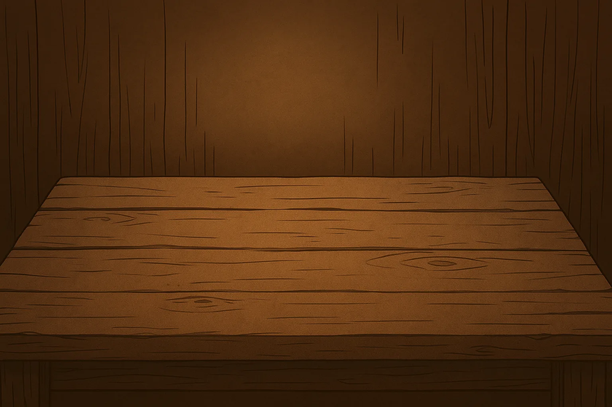
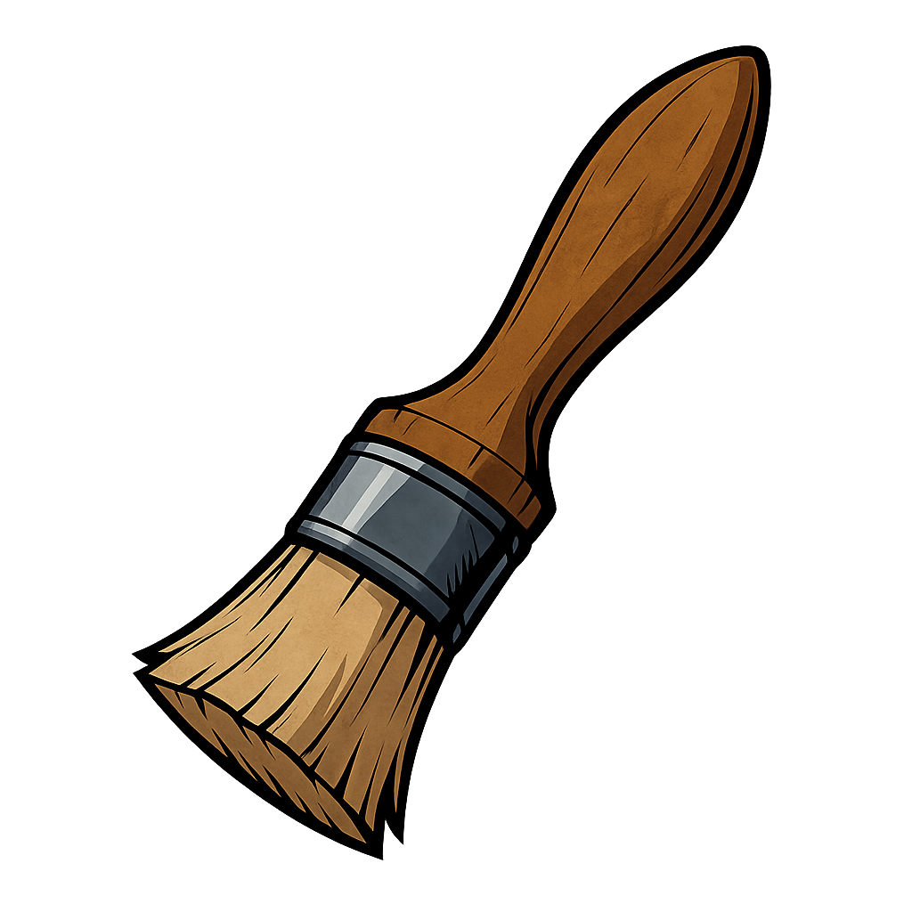
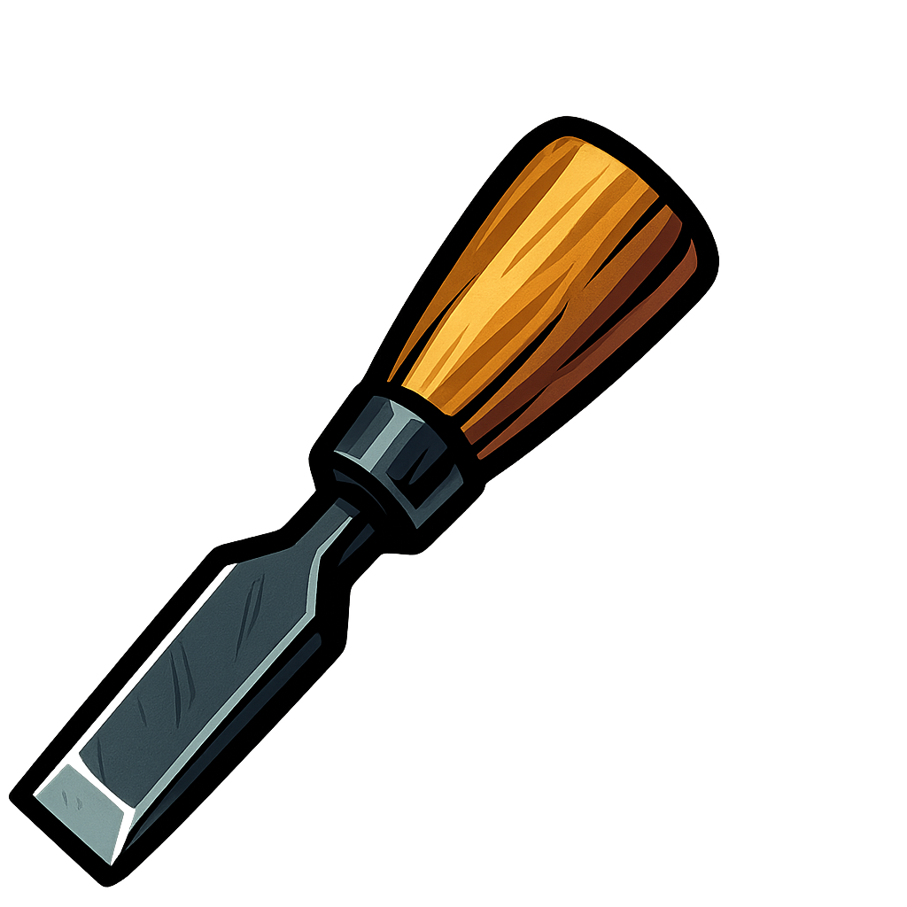
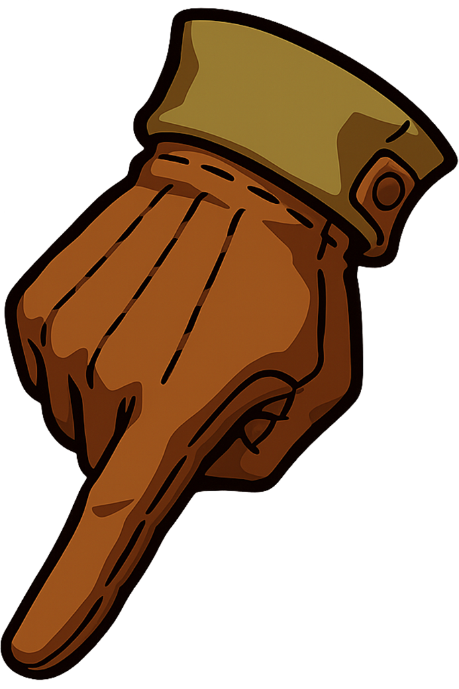
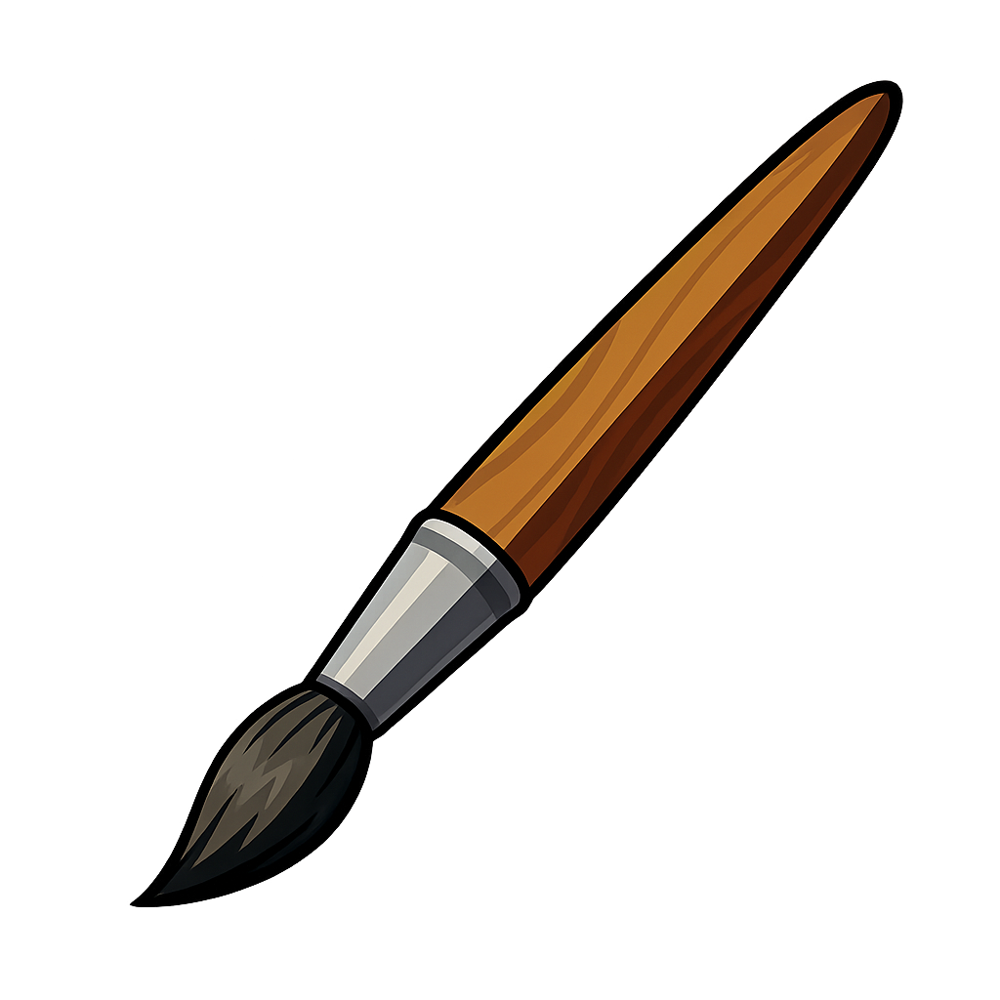
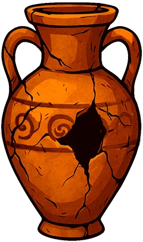

Urna 101A
Fragmentos visibles, superficie contaminada, lectura inicial incompleta.

Investigación arqueológica / aventura narrativa
Archeology Master es un videojuego sobre transformar hallazgos antiguos en conocimiento: cada pieza encontrada debe ser observada, restaurada, fechada y defendida en un dossier propio.
Sistema central
El progreso no depende solo de encontrar objetos, sino de construir una lectura plausible de ellos. El jugador reúne pistas, cruza contexto, limpia capas de deterioro y redacta una interpretación que puede cambiar el valor histórico de la pieza.






Restauración interactiva
La mesa de trabajo combina herramientas táctiles con observación cualitativa. Cada raspado, pincelada o nota revela información parcial: marcas, fracturas, pigmentos y pistas de uso cotidiano.
Artefactos
Las urnas son el primer lenguaje visual de esta versión: piezas frágiles, parcialmente completas, listas para ser limpiadas, comparadas y convertidas en relato histórico.

Fragmentos visibles, superficie contaminada, lectura inicial incompleta.

Variación formal del mismo conjunto; su comparación abre nuevas hipótesis.